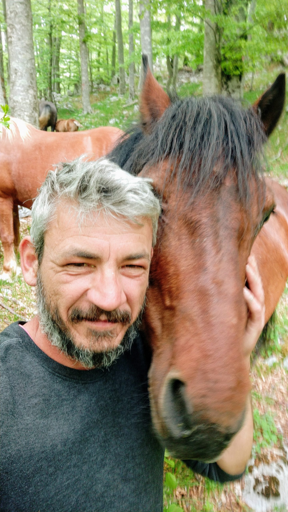

Novosti

Čovjeka na Velebitu ugrizao poskok, poslan helikopter: "Situacija je bila ozbiljna"
Splitski HGSS dobio je nešto prije 14 sati dojavu da je čovjeka ugrizao poskok na Velebitu. Iz Splita je poslan helikopter, a HGSS kaže da je situacija bila jako ozbiljna. Više...

Vuk s Velebita: Kako sam preživio 50 dana sam u planini, bez igdje ikoga…
Možete li zamisliti da u jednom trenutku skupite sve što imate i 'preko noći' zapalite u planinu...? Upravo je to učinio Pero Ćurković dan nakon zagrebačkog potresa. Na vrletima Velebita ostao je gotovo tri mjeseca, uglavnom sam i okružen ćudima prirode, ali ih je prigrlio kao svoj dom. Više...
Preminuo Vlado Prpić Prpa
Dana 1. studenoga među planinarima i drugim zaljubljenicima Velebita prostrujala je tužna vijest: preminuo je je Vlado Prpić Prpa, dobri duh Velebita. Pripadnici Hrvatske gorske službe spašavanja iz Gospić pronašli su njegovo tijelo u blizini Baških Oštarija, gdje je živio.Više...
U papučama na Biokovo i Velebit: Ovako izgleda prosječan turist iz Češke, Poljske, Slovačke...
Spasioci Hrvatske gorske službe spašavanja (HGSS) u nedjelju su iz nevolje kod uvale Zavratnica izvukli dvoje švedskih turista koji su se na obližnji vidikovac odlučili popeti u cipelama Crocs i sandalama.Više...
Mozak ‘na paši’, a život u opasnosti
‘Spašen Čeh koji je isplovio s madracem na napuhavanje’, ‘Pronađen nestali Čeh s gumenjakom’, ‘Bura otpuhala Čehe u gumenom čamcu’, ‘Spašeni češki turisti s Biokova: Planinarili u japankama i klompama’, ‘Česi se jahtom od osam metara nasukali kod otoka Galešnjak'… Više...